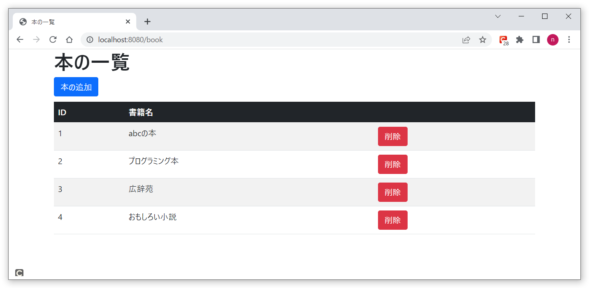
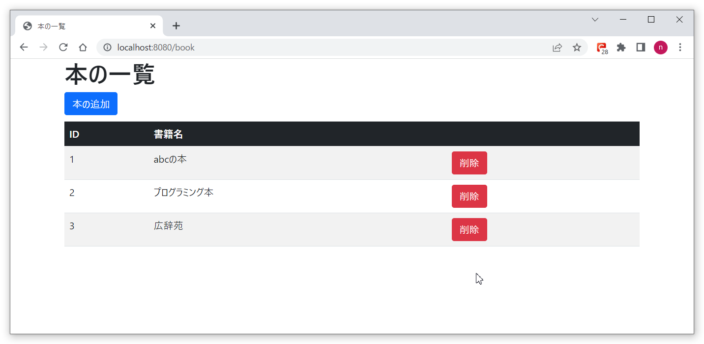

本を管理するWebアプリに、本の削除機能を実装
本の一覧画面から、本の削除機能を実装します。
以下が一覧画面のレイアウトです。削除ボタンを押します。
削除した本が一覧から消えていることが確認できます。
ソースファイルは以下からダウンロードして下さい。
ソースについて
Controllerクラスの削除部分です。
/**
* 削除
*
* @param bookId
* @return
*/
@DeleteMapping("{bookId}")
public String delete(@PathVariable int bookId) {
bookService.delete(bookId);
return "redirect:/book";
}
サービスクラスの削除部分です。
/**
* 削除
*
* @param bookId
*/
public void delete(Integer bookId) {
bookMapper.delete(bookId);
}
リポジトリクラスの削除部分です。
void delete(Integer bookId);
SQLクエリ発行部分のXMLファイルです。
<delete id="delete">
DELETE FROM book
WHERE book_id = #{bookId}
</delete>
画面（フロント）側の削除画面ソースです。
<tbody>
<tr th:each="book : ${bookList}" th:object="${book}">
<td scope="row" th:text="${book.bookId}"></td>
<td scope="row" th:text="${book.bookName}"></td>
<td scope="row">
<form th:action="@{/book/{bookId}(bookId=*{bookId})}" th:method="delete">
<button class="btn btn-danger" type="submit">削除</button>
</form>
</td>
</tr>
</tbody>
起動方法について
BookmanagerApplication.java
を実行し、SpringBootを起動します。
http://localhost:8080/bookにアクセスし、一覧画面から削除ボタンを押し、本が削除できることを確認します。
以上です。いかがだったでしょうか。本が削除できましたでしょうか。
色々な内容の本を削除してみてください。